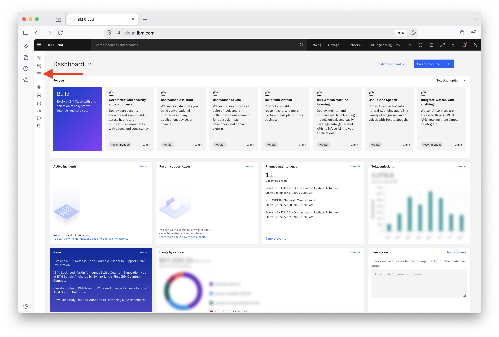
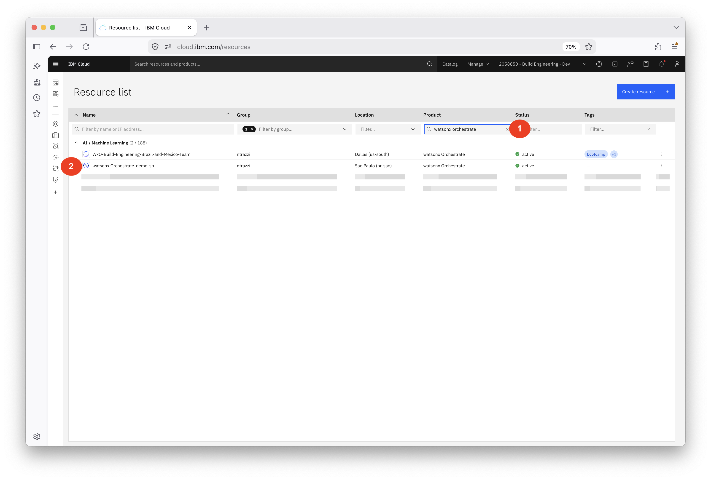
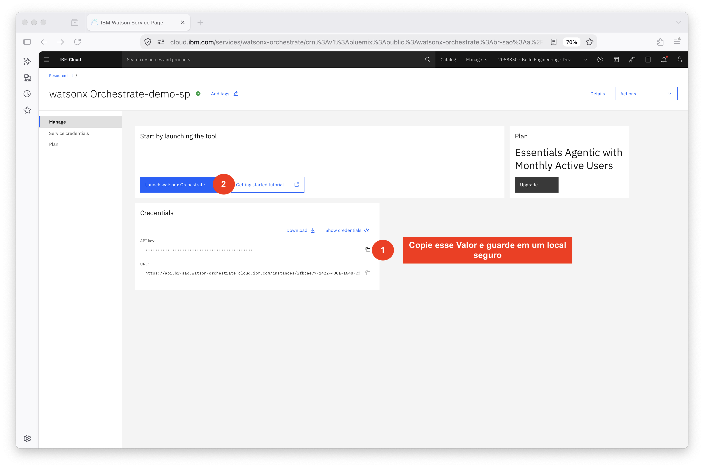
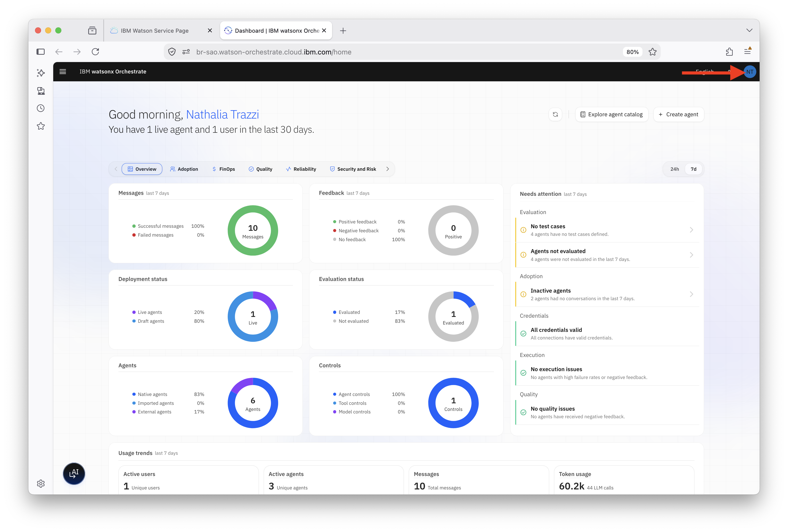
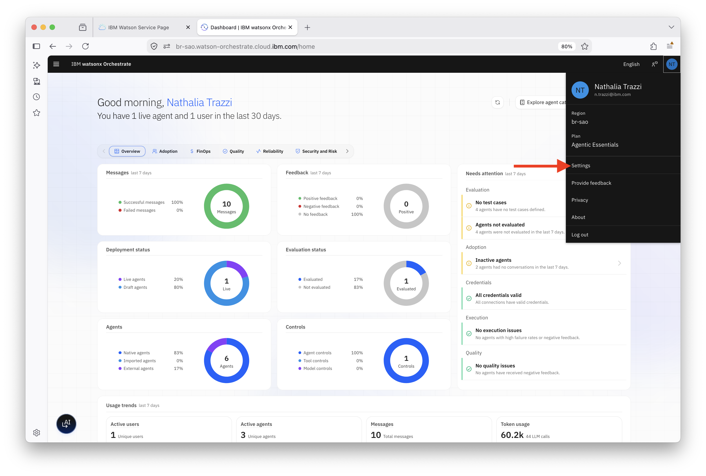
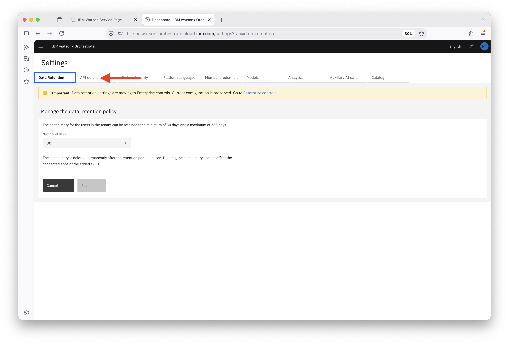
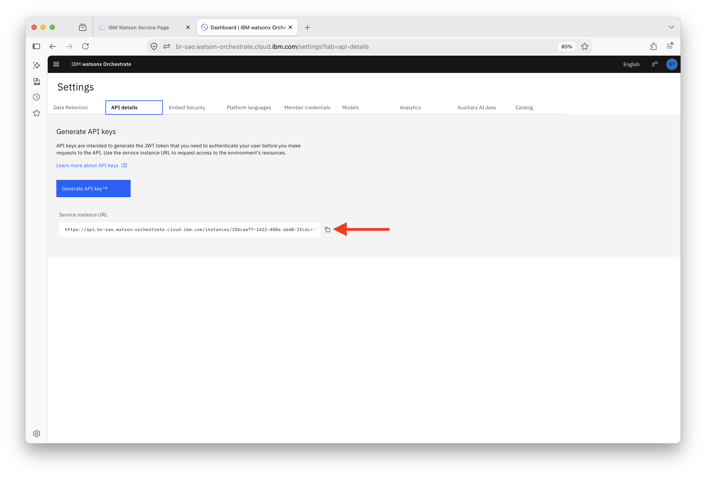

Conectando a ADK (Agent Development Kit) ao seu tenant e criando o primeiro agente em código
Instale o Agent Development Kit, conecte a CLI ao tenant do watsonx Orchestrate e publique recursos diretamente pelo terminal, entendendo como aproveitar as vantagens do modelo as code além das capacidades disponíveis na interface visual.
Visão Geral
No watsonx Orchestrate, você pode criar agentes diretamente pela interface utilizando formulários de uma forma simples e intuitiva. No entanto, essa não é a única forma de desenvolver agentes, tools e fluxos.
O Agent Development Kit (ADK) amplia as possibilidades de desenvolvimento. Com ele, agentes, tools e outros recursos passam a ser definidos como código e arquivos de configuração, podendo ser armazenados em repositórios Git, versionados, revisados por meio de pull requests e promovidos entre ambientes através de pipelines de CI/CD.
Mas o principal benefício do ADK não é apenas transformar agentes em código.
O ADK também permite acessar capacidades que não estão disponíveis na interface gráfica do produto. Isso inclui maior flexibilidade para estruturar projetos, reutilizar componentes, criar integrações customizadas, automatizar processos de deployment e trabalhar com recursos avançados de desenvolvimento e governança.
O ponto não é digitar menos, é conseguir repetir, controlar e escalar. Com uma abordagem baseada em código, é possível recriar exatamente o mesmo agente em qualquer tenant, comparar versões com ferramentas de diff, automatizar implantações e estabelecer práticas de desenvolvimento mais alinhadas à engenharia de software moderna.
Neste guia você instalará o ADK, conectará a CLI ao tenant do watsonx Orchestrate e publicará recursos diretamente pelo terminal, entendendo como aproveitar as vantagens do modelo as code além das capacidades disponíveis na interface visual.
O que é a ADK
É um pacote Python chamado ibm-watsonx-orchestrate. Depois de instalado, você tem um comando chamado orchestrate que fala diretamente com a API do tenant.
O que você declara em código
| Tipo | O que é | Como você declara |
|---|---|---|
| Agente nativo | Recebe a pergunta, decide o que chamar e monta a resposta. | Arquivo YAML com kind: native |
| Tool | Uma ação concreta: calcular, consultar, validar algo. | Função Python com o decorador @tool |
| Collaborator | Outro agente que este pode acionar como se fosse uma tool. | Lista collaborators no YAML |
| Guideline | Regra determinística no formato "quando X, faça Y". | Bloco guidelines no YAML |
Esses quatro tipos cobrem toda a trilha: agente no ADK 1, tools no ADK 2, composição multiagente no ADK 3.
O que este laboratório não usa
A ADK também suporta bancos de dados, APIs externas, servidores MCP, OAuth e a Developer Edition (versão local da plataforma). Nada disso entra aqui.
Você vai usar só o watsonx Orchestrate e Python. Sem Docker, sem banco de dados, sem API externa, sem credenciais de terceiros. As tools terão os dados dentro do próprio arquivo, e a CLI aponta para o tenant que você já tem.
É uma escolha intencional: num workshop, cada dependência extra é um ponto a mais para travar. E do ponto de vista didático, não faz falta — como o modelo enxerga uma tool, como o agente decide chamá-la, como tudo se conecta, isso aparece mesmo com dados fictícios.
Preparando o ambiente
Três passos: Python na versão certa, pasta do projeto e instalação do pacote.
Conferindo a versão do Python
A ADK precisa de Python 3.11 ou mais recente.
Abra o seu terminal no Visual Studio Code ou editor de sua preferência e execute o seguinte comando:
Se estiver numa versão anterior, instale antes de continuar. No macOS: brew install python@3.11. No Windows: baixe o instalador oficial e marque "Add Python to PATH". No Linux: use o gerenciador de pacotes da distro, pyenv ou uv.
Criando a pasta do projeto
Crie a pasta e um ambiente virtual — isso evita que a ADK misture com outros projetos Python da sua máquina:
No Windows: .\.venv\Scripts\activate.
Cada vez que abrir um terminal novo, entre na pasta e ative o venv de novo. Sem isso, o comando orchestrate não vai existir no PATH.
Instalando a ADK
Quando terminar, confirme:
Anote o número — versão é sempre a primeira pergunta quando algo dá errado. O --help funciona em qualquer nível do comando:
Conectando ao seu tenant
A ADK precisa saber para onde enviar o que você escreve. Essa configuração se chama ambiente, e você pode ter vários cadastrados ao mesmo tempo.
Obtendo a URL e a API key
Faça login na IBM Cloud.
Na página inicial, acesse o menu lateral esquerdo como indicado na imagem a seguir:

Na lista de recursos, em Product digite watsonx Orchestrate.
Clique no recurso disponível.
Caso tenha mais de um recurso, busque o seu instrutor para obter informações sobre qual deve utilizar. Se a conta for sua, utilize o de sua preferência.

Na página de gerenciamento de sua instância:
- Copie o valor da API Key do produto e guarde em um local seguro.
Essa API Key pertence ao produto e faz uso somente dele. Caso queira uma API Key com mais acessos e permissões, utilize uma API Key da conta. Mais informações em: IBM Docs — Creating your Cloud API key.
- Clique em Launch watsonx Orchestrate.

Na interface do watsonx Orchestrate, clique no ícone do seu usuário (canto superior direito).

Clique em Settings.

Vá para a aba API details.

Copie a service instance URL, algo no formato https://api.<região>.watson-orchestrate.ibm.com/instances/<id>.

Registrando e ativando o ambiente
Registre a instância com o nome que quiser. O --activate já deixa esse ambiente como o ativo:
O --type depende de onde roda a instância:
| Onde roda | Valor de --type |
|---|---|
| IBM Cloud | ibm_iam |
| AWS | mcsp |
| On-premises | cpd |
Na maioria dos casos a ADK detecta o tipo pela URL e você pode omitir a flag. Na primeira ativação, a CLI vai pedir a API key.
Confira se funcionou:
O ambiente ativo aparece marcado. Para trocar: orchestrate env activate <nome>.
Todo comando age sobre o ambiente ativo. Antes de qualquer import, rode orchestrate env list e confira. São dois segundos que evitam publicar no tenant errado.
Seu primeiro agente em YAML
O cenário da trilha é o suporte ao cliente de um produto fictício chamado Nexus Pro: um agente que responde dúvidas sobre planos, funcionalidades e conta. Nos próximos labs ele vai ganhar tools e um agente especialista. Por enquanto, ele só conversa — e está certo assim. A ideia aqui é fechar o ciclo escrever → importar → testar antes de adicionar qualquer coisa.
Se mais de uma pessoa está usando o mesmo tenant, acrescente suas iniciais ao name — suporte_cliente_ana, por exemplo — e ajuste os comandos nos próximos labs. Dois participantes com o mesmo nome sobrescrevem o trabalho um do outro.
Anatomia do arquivo
Crie o arquivo agents/suporte_cliente.yaml com o conteúdo abaixo.
O que cada campo faz:
| Campo | Para que serve |
|---|---|
spec_version | Versão do formato. Use v1. |
kind | native para agentes do watsonx Orchestrate. |
name | Identificador único — letras, números e underscore. O import usa esse campo para decidir se cria ou atualiza. |
description | Lida por outros agentes quando este é usado como colaborador. Não afeta respostas diretas ao usuário. |
instructions | O comportamento do agente: tom, limites, quando acionar tools. |
llm | Provedor e modelo no formato provedor/modelo. |
style | Use react_core. Os valores default, react e planner estão obsoletos. |
memory_enabled | Mantém histórico entre turnos da sessão. Padrão: desligado. |
hide_reasoning | Esconde o raciocínio do usuário final. Deixe visível enquanto estiver desenvolvendo. |
Misturar os dois é a causa mais comum de agente que nunca é acionado como colaborador. A description é o que os outros agentes leem para saber o que este resolve. As instructions são o manual interno: como ele se comporta. No ADK 3 essa diferença vai ficar clara na prática.
Importando o agente
Da raiz do projeto:
Se der certo, a CLI confirma. Liste para checar:
Com -v você vê o JSON completo — útil quando quer saber exatamente o que foi salvo na plataforma:
Testando pela CLI
Sem precisar abrir o navegador:
Agora teste se as instruções estão valendo. Mande algo que ele não tem como saber:
O comportamento esperado é ele perguntar o que o cliente precisa fazer com o produto, não inventar uma recomendação. Se inventar, a instrução de "não inventar informações" está fraca — reescreva antes de continuar.
Para ver o raciocínio por trás da resposta:
O --include-reasoning vai ser muito útil no ADK 2, quando as tools entrarem. É por ele que você descobre se o agente escolheu a tool certa e com quais argumentos.
Vendo o agente na interface
Abra o watsonx Orchestrate no navegador e vá ao Agent Builder. O suporte_cliente aparece lá, igual a qualquer agente criado pela interface, com o mesmo chat de teste e os mesmos campos editáveis.
Se você editar pela interface e reimportar o YAML depois, o arquivo vence — o import sempre sobrescreve. Escolha uma fonte da verdade e fique nela. Em projeto de código, essa fonte é o arquivo.
Atualizando e removendo
Não existe comando de atualização separado. O import é idempotente por nome: rodar de novo com o mesmo name atualiza o que já existe.
Teste isso agora. Mude alguma linha das instructions — adicione, por exemplo, que o agente deve sempre mencionar o nome do produto ao se apresentar — e importe de novo:
Converse e confirme que o comportamento mudou. Esse ciclo rápido de editar e reimportar é o ritmo normal de trabalho com a ADK.
Se quiser uma confirmação antes de sobrescrever algo que já existe:
Para remover:
Não remova o agente agora — ele é a base dos próximos dois labs. Esse comando é para quando você quiser limpar o tenant no final da trilha.
Resumo
ADK instalada, CLI conectada ao tenant, agente publicado sem abrir a interface uma vez. Os comandos do dia a dia:
| Comando | O que faz |
|---|---|
orchestrate env list | Lista os ambientes e mostra qual está ativo |
orchestrate env activate <nome> | Troca o ambiente ativo |
orchestrate agents import -f <arquivo> | Cria ou atualiza um agente |
orchestrate agents list -v | Lista agentes com detalhe completo |
orchestrate agents remove -n <nome> -k native | Remove um agente |
orchestrate chat ask --agent-name <nome> "..." | Conversa com o agente pelo terminal |
orchestrate --debug <comando> | Saída detalhada para investigar erros |
Antes de seguir, confirme
orchestrate --versionretorna um número de versãoorchestrate env listmostra o seu ambiente como ativoorchestrate agents listinclui osuporte_cliente- O agente responde no
chat aske pede as informações que faltam em vez de inventar - O agente aparece no Agent Builder
Próximos Passos
No ADK 2, o agente ganha tools em Python puro. Você vai ver como o modelo enxerga a assinatura de uma função e por que a docstring acaba sendo a parte mais crítica do código.
A referência oficial da ADK está em developer.watson-orchestrate.ibm.com, versionada por release.